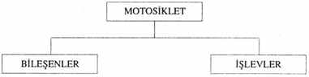
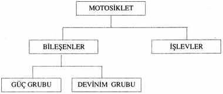

8
Saat yaklaşık sabahın onu, Miles City, Montana’da bulduğumuz otelin arkasındayım ve motosikletin yanında, serin bir kaldırım taşı üstünde oturuyorum. Sylvia hepimizin çamaşırlarını yıkamak için Chris’le birlikte çamaşırhaneye gitti. John kaskının üzerine koyacağı bir ornitorenk bulmak için gitti. Dün kasabaya geldiğimizde
bir motosiklet dükkânında görmüş. Ben de motoru biraz kıyaklaştırmak istiyorum.
Kendimi iyi hissediyorum. Buraya öğleden sonra vardık ve bol bol uyuduk. Durmamız çok iyi oldu. Ne kadar yorulduğumuzun farkına varmadan kendimizi perişan etmekle ne aptallık yapmışız. John odalar için kayıt yaptırmaya çalışırken benim adımı bile anım- sayamadı. Resepsiyoncu kız, pencereden görünen “son moda, müthiş” motosikletlerin bizim mi olduğunu sorduğunda ikimiz de öyle gülmüştük ki kızcağız yanlış bir şey söylediğini sanmıştı. Tümüyle aşırı yorgunluktan kaynaklanan mankafa bir gülüştü oysa bizimki. Motosikletleri park edip değişiklik olsun diye yürümekten çok, çok mutluyduk.
Ve banyo. Mermer döşemenin ortasında bizi bekleyen, aslan pençesi ayaklar üzerine oturtulmuş, emaye döküm demirden, güzel bir küvet içinde. Su öyle yumuşak duyumsanıyordu ki sanki sabunu hiç akıtmayacakmış gibi geliyordu. Sonra ana caddelerde gezindik ve kendimizi bir aile gibi hissettik...
Bu motosiklette öyle çok motor ayarı yaptım ki alışkanlık haline geldi. Nasıl yapacağımı pek düşünmüyorum artık. Esas olarak olağandışı bir şey arıyorum. Motorda gevşek sübap sesini andırır bir ses belirdi, ama daha kötü bir şey olabilir, ayarlayıp duruma bakacağım. Sübap ayarı motor soğukken yapılmalı, yani gece nereye park etmişseniz ertesi sabah orada çalışacaksınız; ben de bu yüzden Miles City, Montana’da bir otelin arkasındaki gölgeli kaldırımdayım. Şu anda gölgede hava serin ve bir saat sonraya ya da güneş ağaç dalları arasından çıkana dek öyle kalacak ki, bu da motosiklet üzerinde çalışmak için uygun. Bu motorların ayarını doğrudan güneş altında ya da kafanızın bulandığı geç saatlerde yapmamanız gerekir, çünkü daha önce yüz kez bile yapmış olsanız dikkatli olmak ve bazı şeyleri aramak zorundasınızdır.
Bunun, yani motosiklet bakımının ne kadar akılcı bir iş olduğunu kimse anlamaz. Bir tür “ustalık” ya da bir tür “makine merakı” sanırlar. Doğrudur, ama ustalık hemen tümüyle bir akıl olayıdır ve sorunların çoğu kafanın doğru çalışmamasından, eski radyo spikerlerinin deyimiyle “kulaklıklar arasındaki kısa devre”den kaynaklanır. Motosiklet, akıl yasalarına tümüyle uygun olarak çalışır ve motosiklet bakım sanatı üzerinde çalışmak, aslında, minyatür bir “akılcılık sanatı çalışması”dır. Dün, Phaedrus’un izlediği ve onu delirten şeyin akılcılık hayaleti olduğunu söylemiştim, ama kimsenin anlayamayacağı genellemeler içinde kaybolmamak için akılcılığın, ayağı yere basan örneklerinden ayrılmamak çok önemlidir. Akılcılığın uygulandığı şeyler de işin içine katılmazsa akılcılık üzerine konuşmak çok kafa karıştırıcı bir şey olabilir.
Şimdi, bir yanında motosikleti o anki görünüşüyle gördüğümüz -bu önemli bir bakış tarzıdır- ve öteki yanında motosikleti, tamircilerin yaptığı gibi, saklı biçimlere dayanarak görmeye başlayabileceğimiz -bu da nesnelere bakışın önemli bir tarzıdır- klasik ve romantik arası sınırdayız. Şu aletler, örneğin şu somun anahtarı belirli bir romantik güzelliğe sahip olmasına karşın amacı daima saf klasiktir. Makinenin saklı biçimini değiştirmek üzere dizayn edilmişlerdir.
Şu ilk bujinin iç tarafındaki porselen çok kararmış. Bu, romantik açıdan olduğu kadar klasik açıdan da çirkindir, çünkü silindire çok benzin girdiğini, ama yeterli hava girmediğini gösterir. Benzin içindeki karbon molekülleri birleşecek yeterli oksijen bulamayınca burada, bujinin üzerinde yerleşip birikirler. Dün kasabaya gelirken rölanti sesindeki değişiklik bunun göstergesiydi.
Yalnızca bir silindire mi zengin karışım geldiğini kontrol etmek için ötekini de kontrol ediyorum. İkisi de aynı. Çakımı çıkarıyorum, hendek içinde duran bir sopayı kapıp ucunu sivriltiyorum, bununla bujileri temizliyor, zengin karışımın nedenini merak ediyorum. Bunun sübaplar ve çubuklarıyla ilgisi olamaz. Karbüratörün ayarı ise çok seyrek bozulur. Yüksek hızlarda zengin karışım gelsin diye karbüratörün ana memeleri büyütülmüştü, ama aynı meme olduğu halde bujiler bundan önce çok daha temizdi. Esrarengizlik. Bununla hep karşılaşırsınız. Ama hepsini çözmeye kalkarsanız motoru asla tamir edemezsiniz. O anda bir yanıtı yoksa soruyu öylece bırakmak gerekir.
İlk sübapta bir sorun yok, ayar gerekmiyor, o nedenle bir sonrakine geçiyorum. Güneşin, ağaçların arkasından çıkmasına hâlâ epey zaman var... Bunu yaparken kendimi hep kilisedeymiş gibi hissederim... Şu geyç dinsel bir ikon sanki, onunla kutsal bir tören yapıyorum. Klasik açıdan çok derin bir anlamı olan, “hassas ölçüm aletleri” denen setin bir parçası bu geyç.
Motosiklette bu hassasiyet, romantik ya da mükemmeliyetçi gerekçeler yüzünden sağlanmaz. Bu motorun içindeki ısı ve patlama basıncının müthiş gücünün yalnızca bu aletlerin sağlayacağı hassasiyetle kontrol altına alınabileceği açıktır. Her patlama olduğunda krank miline bağlı piston kolu her santimetre kareye düşen tonlarca güçlü bir yüzey basıncıyla itilir. Eğer piston kolunun krank miline bağlantısı gerektiği gibiyse patlamanın gücü yumuşak bir şekilde aktarılır ve metal buna karşı koyabilir. Ama bu bağlantı bir santimin binde birinden az bir mesafe kadar bile gevşekse kuvvet birdenbire, bir çekiç darbesi gibi vurur ve piston kolu, yataklar ve krank yüzeyi dövülerek aşınır ki bu, gevşek sübap sesine benzeyen bir gürültü çıkarır. Bu nedenle onu kontrol ediyorum. Eğer piston kolu gevşekse ve ben tamir etmeden dağlarda gitmeye kalksam bu ses gittikçe artar, artar ve sonunda piston kolu kırılıp boşta kalır, dönen krank miline çarpar ve motor dağıtır. Bazen kırık kol, karteri delip geçer ve tüm yağ yola akar. Bu durumda tüm yapabileceğiniz yürümeye başlamaktır.
Ama tüm bunlar hassas ölçüm aletleriyle yapılabilecek, bir santimin binde biri düzeyindeki bir ayarla önlenebilir; bu aletlerin sahip olduğu klasik güzellik saklı biçimin denetlenmesi açısından neler yapabileceğindedir; yani nasıl göründüğünde değil ne anlama geldiğinde.
İkinci sübap iyi. Motosikletin caddeye bakan tarafına geçip öteki silindire başlıyorum.
Hassas aletler bir fikri, yani boyutsal hassasiyeti gerçekleştirmek üzere dizayn edilmişlerdir, ama bunların kusursuz olması olanaksızdır. Motosikletin kusursuzca biçimlendirilmiş parçası yoktur ve olamaz, ama bu aletlere, mümkün olduğunca yakınlaştığınızda dikkate değer şeyler olur ve her yönden tümüyle akılcı olmasaydı büyülü diyebileceğiniz bir güçle, ülkenin bir ucundan öteki ucuna uçarak gidersiniz. Asıl önemli olan şey bu akılcı düşünsel fikrin kavranmasıdır. John motosiklete baktığında çeliğin farklı biçimlerini görür, bu çelik biçimlerine karşı olumsuz şeyler hissedip üzerinde daha fazla düşünmez. Ben şu anda çelik biçimlere bakıyor ve fikirler görüyorum. O benim parçalar üzerinde çalıştığımı sanıyor. Oysa ben kavramlar üzerinde çalışıyorum.
Dün, motosikletin bileşenlerine ve işlevlerine göre ayrılabileceğini söylerken bu kavramlardan söz etmiştim. Bunu söylediğimde şöyle şematize edilebilecek bir düzenleme oluşturmuştum:

Ve bileşenlerin, güç grubu ve devinim grubu olarak alt bölümlere ayrılabileceğini söylediğimde, birden yeni kutular belirmişti:

Gördüğünüz gibi, her yeni ayrımı yaptığımda bu ayrımlarla ilgili yeni kutular ortaya çıkmakta, sonunda kutulardan koskoca bir piramit oluşmaktadır. Motosikleti gittikçe daha küçük parçalara böle böle sonunda bir yapı oluşturduğumu görürsünüz.
Kavramlardan oluşmuş bu yapıya bilimsel dilde hiyerarşi denir ve antik çağdan beri tüm Batılı bilginin temelini oluşturmuştur. Krallıklar, imparatorluklar, kiliseler, ordular hep hiyerarşiye göre yapılanmıştır. Modern işletmeler de bu şekilde yapılanır. Referans materyallerinin içindekiler tablosu bu şekilde yapılandırılır, mekanik gruplar, bilgisayar yazılımları, tüm bilimsel ve teknik bilgiler bu şekilde yapılandırılır -öyle ki bazı bilim dallarında, örneğin biyolojide filum-takım-sınıf-kısım-tür hiyerarşisi neredeyse bir ikon konumundadır.
“Motosiklet” kutusu, “bileşenler” ve “işlevler” kutularını içerir. “Bileşenler” kutusu “güç grubu” ve “devinim grubu” kutularını içerir ve böylece gider. Başka uygulamacılar tarafından üretilmiş, uzun zincir yapıları oluşturan, örneğin “nedenler” gibi, daha pek çok yapılanmalar vardır. “A, B’nin nedenidir, B, C’nin nedenidir, C, D’nin nedenidir” ve böylece gider. Motosikletin işlevsel tanımlanmasında bu yapılanma kullanılır. Uygulayıcıların “vardır”, “eşittir” ve “anlamına gelir”leri de başka yeni yapılar yaratır. Bu yapıların birbirleriyle ilişkileri ise, kimsenin yaşam boyu küçük bir bölümünden fazlasını anlayamayacağı kadar karmaşık ve uçsuz bucaksız biçimlerle gerçekleşir. “İçerik hiyerarşisi” ve “nedensellik yapısı” kısımlarının yalnızca birer türünü oluşturduğu, birbiriyle ilişkili tüm bu yapıların genel adı sistem'dir. Motosiklet bir sistemdir. Gerçek bir sistem.
Yönetsel ve kurumsal yapılanmalara da “sistem” demek doğrudur, çünkü bu örgütlenmeler motosikletinkiyle aynı yapısal kavramsal ilişkiler temelinde oluşturulmuşlardır. Tüm anlam ve amaçlarını yitirseler de, yapısal ilişkiler sayesinde ayakta kalırlar. İnsanlar fabrikaya gelir ve tümüyle anlamsız bir işi, soru sormadan, saat sekizden beşe dek yaparlar, çünkü yapı bunun böyle olmasını gerektirmektedir. Onların bu anlamsız yaşamı sürdürmelerini isteyen ne bir kötü adam ne de bir “ahlaksız herif" vardır; yalnızca yapı böyledir, sistem bunu gerektirir ve kimse, yalnızca anlamsız diye yapıyı değiştirme gibi tehlikeli bir işi üstlenmek istemez.
Ama sistem olduğu için bir fabrikayı yıkmak ya da bir hükümete karşı ayaklanmak ya da motosikleti tamirden kaçınmak, nedenlere değil de sonuçlara saldırmaktır ve saldırı yalnızca sonuçlara yönelik olduğu sürece hiçbir değişim olanaklı değildir. Asıl sistem, gerçek sistem, var olan sistematik düşünce yapımızdan, akılcılığın kendisinden başka bir şey değildir; bir fabrika yıkılır, ama onu üreten akılcılık bırakılırsa aynı akılcılık hemen başka bir fabrika üretecektir. Sistematik bir hükümet devrimle yıkılır, ama o hükümeti üreten sistematik düşünce kalıpları sağlam kalırsa o düşünce kalıpları daha sonra başka hükümetlerle kendilerini yineleyeceklerdir. Sistemler konusunda çok şey söylenmiştir. Ama bu konu, hemen hiç anlaşılmamıştır.
Motosiklet budur işte, çeliğe işlenmiş kavramlar sistemi. Birisinin zihninden çıkmamış tek bir parça, tek bir biçim yoktur içinde... Üç numaralı sübap da sağlam. Biri kaldı. En iyisi onun... Anladım ki, çelikle hiç çalışmamış kişiler bunu göremiyorlar -yani motosikletin öncelikle zihinsel bir olgu olduğunu. Onlar metali -borular, kollar, direkler, aletler, parçalar gibi- belli biçimlerde, tümüyle değişmez, dokunulmaz ve öncelikle fiziksel bir şey olarak görüyorlar. Ama makine üretiminde çalışan ya da döküm, demircilik ya da kaynak yapan kişiler “çelik”in hiçbir biçimi olmadığını görürler. Çelik, eğer yeterince ustaysanız istediğiniz her biçimi alabilir, ama eğer usta değilseniz istediğinizin dışında her biçimi olabilir. Şu sübap gibi biçimler sizin vardığınız ve çeliğe verdiğiniz biçimlerdir. Çeliğin, şu motordaki eski kir yığınından başka biçimi yoktur. Bu biçimlerin hepsi birilerinin kafasından çıkmıştır. Bunu görmek önemlidir. Çeliğin kendisi bile mi? Elbette! Çelik bile insan kafasından çıkmadır. Doğada çelik yoktur. Size bunu bronz çağından birisi de söyleyebilirdi. Doğada olan şey yalnızca, çeliğin potansiyelidir. Bundan başka bir şey yoktur. Peki ama, “potansiyel” nedir? Bu da birilerinin kafasındadır... Hayaletler.
Bunların tümüyle insanların kafasında olduğunu söylediğinde Phaedrus’un demek istediği, aslında buydu. Birden ortaya fırlar ve bunu, motor gibi herhangi bir spesifik örnek göstermeden söylerseniz size deli gözüyle bakarlar. Ama onu spesifik ve somut bir şeye bağlarsanız deli görüntüsü yok olmaya başlar ve önemli bir şey söylenmiş olduğu görülür.
Dördüncü sübap, beklediğim gibi çok gevşek. Ayarlıyorum. Zamanlamayı kontrol ediyorum ve bozulmamış olduğunu, platinin meme yapmamış olduğunu görüyorum; o şekilde bırakıyorum, sübap kapağının cıvatalarını sıkıyorum ve motoru çalıştırıyorum.
Sübap sesi kayboluyor, ama bu, yağ henüz soğuk olduğundan şu anda bir anlam taşımıyor. Aletleri yerine kaldırıncaya dek rölantide bırakıyor sonra binip, dün akşam gördüğüm bir motosikletlinin zincir ayarlama bağlantısı ve yeni bir ayak koyma yeri lastiği bulabileceğimi söylemiş olduğu motosiklet dükkânına gidiyorum. Chris’in siniri ayağına vuruyor olsa gerek. Ayak koyma lastiği boyuna aşınıyor.
İki blok gidiyorum ve hâlâ sübap sesi yok. Ses düzelmeye başlıyor, sanırım oldu. Ama gene de otuz mili gitmeden kesin bir sonuca varmak istemiyorum. Ama o zamana dek ve şu anda güneş parlak, hava serin, kafam net, önümüzde koca bir gün var, dağlara nerdeyse geldik, bugün yaşamak güzel. Bu hafif hava yaptı bunu. Yükseklere çıkmaya başladığınızda hep bunu hissedersiniz.
Yükseklik! Motorun zengin karışımla çalışmasının nedeni buydu. Evet, neden buydu. Şu anda yedi yüz elli metredeyiz. En iyisi, standart karbüratör memelerini takayım. Onları takmak yalnızca birkaç dakika alır. Rölantinin hava ayarını da biraz açayım. Daha da yükseklere çıkacağız.
Bill’in, ağaç gölgeleri altındaki motosiklet dükkânını buluyorum, ama Bili yok. Dükkân kapısı ardına kadar açık, yoldan geçen biri onun “herhalde bir yere balık tutmaya gittiğini” söylüyor. Gerçekten Batı’dayız. Chicago ya da New York’ta kimse dükkânın kapısını böyle açık bırakıp gitmez.
İçeriye girince Bill’in “fotoğrafik kafa” ekolünden bir tamirci olduğunu anlıyorum. Her şey ortalıkta bir yerlerde. Somun anahtarları, tornavidalar, eski yedek parçalar, eski motosikletler, yeni yedek parçalar, yeni motosikletler, satış ilanları, şamreller, her şey öyle üst üste ve karışık bir halde ortalığa saçılmış ki bunların altındaki tamir tezgâhını bile göremiyorsunuz. Ben bu koşullarda çalışamam, çünkü ben fotoğrafik kafalı bir tamirci değilim. Herhalde Bill bu kaos içinde herhangi bir aleti, nerede olduğunu bile düşünmeden dönüp eline alabiliyordur. Bu tür tamirciler görmüştüm. Bunan izlemek sizi çıldırtabilir, ama işlerini iyi ve bazen daha çabuk yaparlar. Fakat bir aleti üç santim sola çekseniz günlerce aramak zorunda kalırlar.
Bill bir şeye gülerek dükkâna geliyor. Elbette benim motor için karbüratör memesi vardı ve nerede olduğunu biliyordu. Ama bir saniye beklemem gerekiyordu. Dışarıda, arkada Harley marka motosiklet parçaları üzerinde biriyle pazarlık yapıyordu. Onunla dışarı çıkıp arkadaki bir barakaya gidiyorum ve tüm bir Harley motosikleti, hâlâ sahibine ait olan şasisi dışında, kullanılmış parça olarak sattığını görüyorum. Hepsini 125 dolara satıyor. Hiç de fena değil.
Geri dönerken, “Bunu yeniden toplamaya kalktığında motosikletler hakkında epey şey öğrenecek,” diyorum.
Bill gülüyor. “Eh, öğrenmenin en iyi yolu da budur.”
Karbüratör memesi ve ayak koyma yeri lastiği var, ama zincir ayar bağlantısı yok. Lastiği ve memeleri yerine takıyorum, rölantiyi ayarlıyorum ve binip otele dönüyorum.
Vardığımda Sylvia, John ve Chris eşyaları ile birlikte merdivenden iniyorlar. Yüzlerinden, onların da benim gibi mutlu oldukları anlaşılıyor. Ana caddeden iniyoruz, bir restoran bulup öğle yemeği için biftekleri söylüyoruz.
“Burası müthiş bir kasaba,” diyor John, “gerçekten müthiş. Böyle bir yer kalmış olabileceğini hiç sanmazdım, şaştım. Bu sabah tüm çevreyi gözden geçirdim. Barları, kovboy çizmeleri, gümüş dolar kemer tokaları, Levis, Stetson’s, her şey var... ve gerçek. Ticaret Odası damgalı şeyler değil. Bir blok aşağıdaki barda benimle, sanki tüm yaşamımı burada geçirmişim gibi konuştular.”
Herkes birer bira ısmarlıyor. Duvardaki bir atnalı işaretinin yanında, şu anda Olympic biralarının bölgesinde olduğumuzu belirten yazıyı görüyorum ve ondan istiyoruz.
“Benim bir çiftlikten falan geldiğimi sandılar herhalde,” diye sürdürüyor John. “Ve benimle konuşan yaşlı herif kahrolası oğullarına hiçbir şey vermeyeceğinden söz ediyordu; çok hoşuma gitti. Çiftlik kızlarına kalacakmış, çünkü kahrolası oğullar kazandıkları her senti Suzie’nin yerinde harcıyorlarmış.” John makaraları koyveriyor. “Onları büyüttüğüne bile pişmanmış, falan filan. Böyle şeylerin otuz yıl önce bittiğini sanırdım, ama burada hâlâ var.”
Garson kız biftekleri getiriyor ve çatal bıçak girişiyoruz. Motosikletle uğraşmak iştahımı açmış.
“Sizi ilgilendirecek bir şey de var,” diyor John. ‘“Barda, bizim gideceğimiz Bozeman hakkında konuşuluyordu. Diyorlar ki, Montana valisinin elinde, Bozeman kolejinden kovulacak elli radikal kolej öğretmeninin yer aldığı bir liste varmış. Ama vali bir uçak kazasında ölmüş.”
“Bu çok zaman önceydi,” diye yanıtlıyorum. Biftekler gerçekten güzel.
“Bu eyalette bu kadar çok radikal olduğunu bilmiyordum,” diyor John.
“Bu eyalette her tür insan vardır,” diyorum, “ama politikada sağcılar ağırlıktadır.”
John uzanıp tuzu alıyor. Diyor ki, “Bir Washington gazetesinin bir köşe yazarı durumu öğrenmiş ve dün sütununda bunu yazmış; bu yüzden herkes bu konuyu konuşuyor. Kolejin müdürü olayı doğrulamış.”
“Listeyi basmışlar mı?”
“Bilmiyorum. Senin bildiğin biri var mı?”
“Elli ad varsa,” diyorum “bir tanesi de benimki olsa gerek.”
İkisi de bana biraz şaşkın bakıyorlar. Aslında bu konuda ben de fazla bir şey bilmiyorum. Bu, ‘o’ydu elbette; bundan kaynaklanan yalan söyleme gereğiyle, Montana’nın Gallatin ilçesindeki bir “ra- dikal”in başka yerlerdeki radikallerden biraz farklı olduğunu açıklıyorum.
“Bu kolej,” diyorum, “Birleşik Devletler Başkanı’nın eşinin ‘çok sorunlu’ bulunduğu için okunmasının yasaklandığı kolejdi.”
“Kim?”
“Eleanor Roosevelt.”
“Aman Tanrım,” John gülüyor “çıldırmış olmalılar.”
Bu konuda daha fazla şey öğrenmek istiyorlar, ama bir şey söylemek zor. Sonra bir şey anımsıyorum. “Böyle bir durumda gerçek bir radikalin durumu aslında gayet iyi olur. Nerdeyse her istediğini yapabilir, çünkü muhalefetiyle zaten o hıyarları çileden çıkarmıştır. Ne söylese fark etmez.”
Çıkışta, dün gece fark ettiğim ve zihnimde bir anı kıvılcımı yaratan kent parkının önünden geçiyoruz. Bazı ağaçlara bakınca gelen bir görüntü yalnızca. Phaedrus Bozeman’a giderken bir gece şu park sırasının üzerinde uyumuştu. Bu yüzden bu ormanı dün gece tanıyamadım. Çünkü buradan gece geçmişti, Bozeman kolejine giderken.
9
Şu anda Yellowstone vadisini izleyerek Montana’da ilerliyoruz. Batı’nın kokulu artemisia çalıları, yerini Ortabatı’nın mısır tarlalarına bırakıyor ve görünüm yeniden, nehirden sulama yapılıp yapılmamasına göre değişiyor. Bazen bizi sulanmış bölgeden uzaklaştıran kayalıkları geçiyoruz, ama genellikle nehirlere yakın gidiyoruz. Lewis ve Clark’tan* söz eden bir tabelanın yanından geçiyoruz. Onlardan biri, Kuzeybatı Geçidinden yaptıkları bir gezide buraya gelmiş.
“Kuzeybatı Geçidi” kulağa hoş geliyor. Chautauqua’ya uyuyor. Biz de gerçekten bir tür Kuzeybatı Geçidindeyiz. Yine tarlalardan ve çöllerden geçiyoruz ve gün yavaş ilerliyor.
Şimdi, Phaedrus’un izlediği hayaleti, akılcılığın kendisini, saklı biçimlerin o sıkıcı, karmaşık, klasik hayaletini izlemek istiyorum.
Bu sabah, düşünce hiyerarşilerinden, yani sistemden söz etmiştim. Şimdi bu hiyerarşiler arasında yolunu bulma yönteminden, yani mantıktan söz etmek istiyorum.
İki tür mantık kullanılır, tümevarım ve tümdengelim. Tü- mevarımsal çıkarım, makinenin gözlenmesinden yola çıkarak genel sonuçlara varır. Örneğin motosiklet bir tümsek üzerinden geçse ve motor kesiklik yapsa ve yine başka bir tümsek üzerinden geçse ve
* Meriwether Lewis ve William Clark. 1804-1806 arasında ABD'nin kuzeybatısına, Montana’ya ve Kuzey Pasifik kıyılarına karadan ilk keşif yolculuğunu düzeyleyen subaylar. Bu keşif daha sonra, ABD'nin batı kıyılarını Kuzey Buz Denizi üzerinden Avrupa'ya bağlayan ‘Kuzeybatı Geçidi' deniz yolunun keşfine yardımcı olmuştur, (ç.n.)
yine kesiklik yapsa ve yine başka bir tümsek üzerinden geçse ve yine kesiklik yapsa ve sonra düz uzun bir yol boyunca kesiklik yapmasa ve sonra dördüncü bir tümsek üzerinden geçip yine kesiklik yapsa mantıksal olarak, kesikliğin tümseklerden kaynaklandığı sonucuna varılır. Bu, tümevarımdır: Kısmi deneyimlerden genel doğrulara doğru akıl yürütme.
Tümdengelim çıkarsaması bunun tersini yapar. Genel bilgiden yola çıkarak, spesifik bir gözlemi önceden bildirir. Örneğin tamirci, motosiklet hakkındaki olguların hiyerarşisini okumuş ve motosikletin klaksonunun yalnızca akünün elektriğinden güç aldığını biliyorsa, mantıksal olarak, akü bittiğinde klaksonun çalışmayacağı çıkarsamasını yapacaktır. Tümdengelim budur.
Sağduyuyla çözülmesi çok zor olan sorunlar, motosikleti gözlemek ile kullanma kılavuzunda bulunabilecek motorun zihinsel hiyerarşisine başvurmak arasında mekik dokuyan, tümevarımsal ve tümdengelimsel çıkarımlardan oluşmuş uzun ve karışık bir zincir ile çözülebilir. Bu mekik dokumanın doğru programı bilimsel yöntem olarak adlandırılır.
Aslında tam bir formel bilimsel yöntem uygulanmasını gerektiren bir motosiklet bakım sorunuyla hiç karşılaşmadım. Tamir sorunları o derece çetin değildir. Formel bilimsel yöntemi düşündüğümde bazen gözümün önüne kocaman bir juggernaut,* dev bir buldozer imajı geliyor -ağır, sıkıcı, hantal, yorucu, ama yenilmez. Tamircinin formel olmayan tekniklerine göre iki kat, beş kat, belki de on iki kat daha fazla zaman alır, ama sonunda onu başaracağınızı bilirsiniz. Motosiklet bakımının temeli olan, hatayı bulma işleminde normalde sorun çıkmaz. Ama gerçekten çok zor bir soruna çattığınızda her şeyi yapmış, beyninizi zorlamışsanız, ama bunlar hiçbir işe yaramamışsa bu kez Doğa’nın zorluk çıkarmaya karar verdiğini anlarsınız ve “Peki Doğa, kibarlığa paydos” deyip formel bilimsel yöntemi devreye sokarsınız.
Bunun için bir laboratuvar defteri tutarsınız. Her şeyi oraya, formel olarak not edersiniz ve her seferinde, nerede olduğunuzu, nereden geldiğinizi, nereye gideceğinizi ve nereye varmak istediğinizi bilirsiniz. Bilimsel çalışmalarda ve elektronik teknolojisinde bu gereklidir, yoksa sorun öyle bir karışık durum alır ki içinde
* Bir Hint tanrısının, tekerlekleri altında insanların öldüğü dev heykeli, (ç.n.)
kaybolursunuz, kafanız karışır, neyi bilip neyi bilmediğinizi unutur ve pes etmek zorunda kalırsınız. Motosiklet bakımında karşılaşılanlar bu denli zor değildir, ama kafa karışıklığı başladığında işi, formel ve kesin kılarak yürütmek iyi bir fikirdir. Bazen, sorunları salt not etmek bile kafanızı açıp bunların aslında ne olduğunu anlamanızı sağlayabilir.
Deftere girecek mantıksal anlatımlar altı kategoriye ayrılır: 1) Sorunun anlatımı, 2) Sorunun nedenleri hakkında hipotezler, 3) Her bir hipotezi sınamak için düzenlemiş deneyler, 4) Deneylerin önceden tahmin edilen sonuçları, 5) Deneylerin gözlenen sonuçlan, 6) Deneylerin sonucundan yapılan çıkarımlar. Bu, pek çok kolej ve yüksekokulda laboratuvar defterlerinin formel düzenlemesinden farklı değildir, ama artık burada amaç işgüzarlık değildir. Burada amaç, düşünceleri, eğer yanlış iseler bunu ortaya çıkaracak, dikkatli bir kılavuza teslim etmektir.
Bilimsel yöntemin gerçek amacı, Doğa’nın, aslında bilmediğiniz bir şeyi bildiğinizi sanmanıza yol açarak size kandırmasına izin vermemektir. Bundan çok çekmemiş, buna karşı içgüdüsel olarak tetikte olmayan bir tek tamirci, bilimadamı ya da teknisyen yoktur. Bilimsel ve mekanik bilgilerin büyük çoğunluğunun böylesine sıkıcı ve ihtiyatlı olmasının nedeni budur. Bilimsel enformasyona ara sıra fanteziler katıp romantize ederseniz ya da özen göstermezseniz Doğa hemen sizi rezil eder. Gerçi ona fırsat vermediğinizde bile bunu sık sık yapar. Doğa’yla uğraşırken aşırı dikkatli ve katı bir biçimde mantıksal olmak gerekir: Küçük bir mantıksal kayma tüm bilimsel yapının yerle bir olmasına yol açar. Makine hakkında yanlış bir tümdengelim sizi süresiz olarak durdurabilir.
Formel bilimsel yöntemin, sorunun anlatımını içeren ilk bölümünde en önemli ustalık, kesinliğinden emin olduğunuz şeyler dışında hiçbir şeyi konu etmemenizdir. Örneğin, sorunun elektrik sisteminde olduğundan kesin olarak emin değilseniz “Çözülecek sorun: Elektrik sistemindeki hata nedir?” tümcesi yerine, belki daha aptalca gibi duran, ama daha doğru olan “Çözülecek sorun: Motosiklet neden çalışmıyor?” tümcesini koymak daha doğrudur. Yapmanız gereken şey “Çözülecek sorun: Motosiklette hatalı olan nedir?” diye belirttikten sonra ikinci bölümün ilk kaydı olarak “Bir numaralı hipotez: Sorun elektrik sistemindedir,” tümcesini geçmektir. Bu konuda düşünebileceğiniz kadar çok hipotezi belirttikten sonra, hangisinin doğru hangisinin yanlış olduğunu anlamak için deneyler tasarlarsınız.
Başlangıç sorunlarında böylesi dikkatli bir yaklaşım, haftalarca boşuna uğraşmanıza, hatta tümüyle durmanıza yol açabilecek çok yanlış bir yöne sapmanızı önleyecektir. Bilimsel soruların ilk bakışta aptalca gibi görünmesinin nedeni budur. İlerde yapılacak aptalca hataları önlemek için sorulmuşlardır.
Formel bilimin yöntemin deneme denilen üçüncü bölümünü romantikler bazen bilimin tümü olarak görürler, çünkü en çok görünen yüzeydeki bölüm budur. Onların gördüğü bir sürü deney tüpü, garip aletler ve buluş peşinde koşan insanlardır. Deneyin, daha büyük bir düşünsel sürecin bir parçası olduğunu anlayamazlar ve genellikle deneyleri, aynı şey gibi görünen demonstrasyonla karıştırırlar. Elli bin dolarlık Frankenstein aletleriyle bilimsel hopus-pokus şovu yapan adam, çabalarının sonucunun ne olacağını önceden biliyorsa yaptığı bilimsel bir şey değildir. Öte yandan, akünün çalışıp çalışmadığını anlamak için klaksona basan bir motosiklet tamircisi enformel olarak, gerçek bir bilimsel deney yapmaktadır. Soruyu doğaya yönelterek bir hipotezi sınamaktadır. Filmlerde acıklı bir şekilde “deney başarısız oldu; umduğumuz sonucu bulamadık” diye mırıldanan bilimadamı kötü bir senaryo yazarının kurbanıdır olsa olsa. Öngörülen sonucu çıkaramayan bir deney asla salt bu yüzden başarısız sayılamaz. Bir deney ancak, eldeki hipotezin sınanmasında işe yaramazsa, ürettiği veriler, öyle ya da böyle hiçbir şeyi kanıtlamıyorsa başarısızdır.
Buradaki ustalık, deneyleri yalnızca eldeki hipotezin sınanması için kullanmak, bundan ne azma ne de çoğuna gitmemekten ibarettir. Korna çalıyor diye tamirci tüm elektrik sisteminin sağlam olduğu sonucuna varırsa büyük bir yanılgıya düşer. Çünkü mantıkdışı bir sonuca varmıştır. Kornanın çalması yalnızca akü ve kornanın sağlam olduğunu gösterir. Doğru bir deney yapmak için neyin neye doğrudan yol açtığına dayanarak çok kesin düşünmeliyiz. Bunu hiyerarşiden biliyorsunuz. Korna motosikletin yürümesini sağlamaz. Çok dolaylı tarzda düşünülmezse akü de öyledir. Elektrik sisteminin, motorun ateşlenmesini doğrudan sağladığı nokta bujilerdir ve elektrik sisteminin evrimini burada sınamadığınız takdirde arızanın elektrik sisteminden kaynaklanıp kaynaklanmadığını asla gerçekten bilemezsiniz.
Bunu sınamak için tamirci bujiyi söker ve bujinin çevresindeki taban, şasiyle elektrik bağlantısı sağlayacak şekilde onu motorun üzerine koyar, ayak marşına vurur ve buji aralığında mavi kıvılcım oluşup oluşmadığına bakar. Eğer oluşmuyorsa iki olasılıktan birine karar verebilir: a) Ya bir elektrik arızası vardır, b) ya da deney dikkatsiz yapılmıştır. Eğer deneyimliyse, bağlantıları kontrol ederek, bujinin ateşlemesini sağlayacağını düşündüğü her şeyi yaparak birkaç kez daha dener. Gene de ateşleme olmazsa sonunda a’nın doğru olduğu, yani bir elektrik arızası olduğu sonucuna varır ve deney biter. Hipotezinin doğruluğunu kanıtlamıştır.
Son kategoride, yani çıkarım aşamasında ustalık, deneyin kanıtladığından fazla bir şeyi belirtmemekten geçer. Elektrik sistemini onardığında motosikletin çalışacağı kanıtlanmış değildir. Başka yerlerde de arıza olabilir. Ama elektrik sistemi düzelmeden motosikletin yürüyemeyeceğini bilir ve bundan sonraki formel sorusunu sorar: “Çözülecek sorun: Elektrik sisteminde ne arıza var?”
Daha sonra bunun için hipotezler oluşturur ve bunları sınar. Tamirci, doğru soruları sorarak ve bunlar için doğru sınama yöntemlerini seçerek ve doğru çıkarımlara vararak motosiklet hiyerarşisinin kademelerinden, motordaki arızanın spesifik neden ya da nedenlerini bulana dek aşağıya doğru iner ve onları, bir daha sorun çıkarmayacak şekilde değiştirir.
Eğitimsiz bir gözlemci yalnızca fiziksel çalışmayı görür ve genellikle, tamircinin yaptığı başlıca şeyin fiziksel çalışma olduğu düşüncesini edinir. Aslında fiziksel çalışma tamircinin yaptıklarının en küçük ve en kolay bölümüdür. Çalışmasının açık farkla en büyük bölümü dikkatli gözlem ve doğru düşünmedir. Tamircilerin bazen, deneme yaptıklarında suskun ve soğuk davranmalarının nedeni budur. Onlarla konuşmaya kalktığınızda hoşlanmazlar, çünkü zihinsel imajlar, hiyerarşiler üzerinde yoğunlaşmışlardır ve aslında ne size ne de motosikletin fiziksel görünüşüne bakmaktadırlar. Deneyi, motosiklet arızaları üzerindeki bilgi hiyerarşilerini genişletme ve kafalarındaki gerçek hiyerarşiyle karşılaştırma programının bir parçası olarak kullanırlar. Saklı biçimlere bakıyorlardır.
Karşıdan gelen arkası römorklu bir otomobil bizim şeridimizde ve bir türlü kendi şeridine geçmiyor. Bizi görmesini sağlamak için farı yakıyorum. Bizi görüyor, ama kendi şeridine geçmiyor. Banket dar ve kasisli. Girsek bizi fırlatır. Fren yapıyorum, korna çalıyorum, flaşör yapıyorum. Tanrım, adam panikliyor ve bizim bankete doğru kırıyor! Ben yolun kenarından ayrılmıyorum. Şimdi üstümüze GELİYOR. Son anda, ancak bir-iki santim farkla bizi sıyırıp geçiyor.
Yolun ilerisinde bir karton kutu rüzgârla çırpınıp yuvarlanıyor, bir yerde duruncaya dek uzun süre onu seyrediyoruz. Birisinin kamyonundan düşmüş anlaşılan.
Orta Iowa’da olduğunu sandığım küçük bir kasabada duruyoruz. Tüm çevrede mısır yetiştiriliyor, havada ağır bir gübre kokusu var. Park ettiğimiz motosikletleri bırakıp yüksek tavanlı, koskoca, eski bir yapıya kendimizi atıyoruz. Bu kez biranın yanında, lokantadaki bütün mezeleri ısmarlıyorum. Fıstık, popcorn, gevrek halka, patates cipsi, kurutulmuş hamsi, kurutulup tütsülenmiş, içinde bir sürü ince kılçık olan bir başka tür balık, biber, Frito, sosis baharatı serpilmiş, kızarmış domuz derisi ve tanımlayamayacağım güzel bir tadı olan susamlı krakerlerle gecikmiş bir öğle yemeği yiyoruz.
Sylvia, “Kendimi hâlâ halsiz hissediyorum,” diyor.
Anayolda yuvarlanıp duran o karton kutunun yerine motosikleti koymuş.
10
Vadiden çıkınca gökyüzü yine nehrin iki yanındaki dik kayalarla sınırlı ama kayalar şimdi sabaha göre birbirlerine ve bize daha yakınlar. Nehrin kaynağına doğru gittikçe vadi daralıyor.
Biz de, tartıştığım şeyler için bir tür başlangıç noktasındayız; sonunda Phaedrus’un, akılcılık hayaletinin peşine düşmüşken akılcı düşüncenin genel eğiliminden nasıl ayrıldığını anlatmaya başlayabiliriz.
Onun kendi kendine birçok kez okuyup yinelediği, bu yüzden aklında aynen kalmış bir pasaj vardı. Şöyle diyordu:
Bilim tapınağında birçok konak vardır, orada oturanlar da, onları oraya getiren güdüler de çeşit çeşittir.
Birçoğu bilime, üstün entelektüel güçlerinin keyini çıkarmak için gelirler; parlak deneyimler ve ihtiraslarına doyum aradıkları, kendilerine özel bir spor gözüyle bakarlar bilime. Başka birçok kişi ise beyinlerinin ürünlerini salt faydacı amaçlarla bu altara sunmak için gelirler bu tapınağa. Tanrı’nın bir meleği gelip de bu iki kategoriye ait kişileri dışarı atsaydı tapınak büyük ölçüde boşalır, ama gene de içerde bugünden ve geçmişten bazı adamlar kalırdı... Orada kovduğumuz tiplerden başka tip olmasaydı, içinde sürüngenlerden başka bir şey bulunmayan bir orman olmayacağı gibi, tapınak diye bir şey de olmazdı... Meleğin onayladığı kişilerse... biraz garip, iletişimsiz, gerçekte birbirlerine, kovulanlardan daha az benzeyen, yalnız tiplerdir.
Onları bu tapınağa getiren şeyin ne olduğu sorusuna... bir tek yanıt verilemez... günlük yaşamın acı veren kabalığından ve umutsuz kasvetinden, kendi değişken arzularının prangasından kaçmak. İyi huylu bir insan, kendisini hapseden gürültülü çevreden, gözlerin hâlâ temiz kalmış hava içinde özgürce gezindiği ve sonsuza dek kalmak üzere oluşmuş biçimleri sevecenlikle izlediği yüksek dağların sessizliğine kaçmayı özler.
Bu pasaj, Albert Einstein adlı genç bir Alman bilimadamının 1918’de yaptığı bir konuşmadan alınmıştı.
Phaedrus üniversite öğreniminin ilk yılını on beş yaşında bitirmişti. Aslında alanı biyokimyaydı, ama onun amacı, şimdi mo- leküler biyoloji olarak anılan, organik ve inorganik dünyaların kesiştiği alanda uzmanlaşmaktı. Bunu kişisel ilerlemesini sağlayacak bir kariyer yapmanın aracı olarak görmüyordu. Çok gençti; bu soylu, idealist bir hedefti.
İnsanın bu tür bir çalışmaya girmesini sağlayan ruh durumu, dinsel bir müridinkine ya da bir âşığınkine benzer. Sürekli çaba, tasarlanmış bir amaçtan ya da programdan değil, doğrudan yürekten gelir.
Phaedrus, bilime, ihtiraslarını doyurmak için ya da faydacı amaçlarla girmiş olsaydı kendi başına bir varlık olarak bilimsel hipotezin doğası hakkında asla sorular sormazdı. Ama o sordu ve aldığı yanıtları doyurucu bulmadı.
Bilimsel yöntemin tüm kategorileri arasında en gizemlisi, hipotezlerin oluşumudur. Nerden geldiklerini kimse bilmez. Adamın biri bir yerde oturmakta, kendi işini düşünmektedir ve birden -hop!- daha önce anlayamadığı bazı şeyleri anlayıverir. Sınanıncaya dek, hipotezler gerçek değildir. Çünkü bunların kaynağı sınama değildir. Onun kaynağı başka bir yerdedir.
Einstein diyor ki:
İnsan kendisi için, dünyanın basitleştirilmiş ve anlaşılır bir resmini, kendine en uygun tarzda yapmaya çalışır. Sonra, bir ölçüde, deneyimler dünyasının yerine bu kendi kozmosunu koymaya, böylece onu yenmeye çalışır... Bu yolla, kişisel deneyimin dar girdabında bulamadığı sükût ve huzuru bulmak için, bu kozmosu inşa etmeyi ruhsal yaşamının ekseni haline getirir... En büyük amaç... kozmosun saf tümdengelimle kurulabileceği evrensel temel yasalara ulaşmaktır. Bu yasalara giden mantıksal yollar yoktur; onlara yalnızca sezgiyle, deneyimin sempatik kavranışı ile varılabilir...
Sezgi? Sempati? Bilimsel bilginin kaynağı için garip sözcükler. Einstein kadar çaplı olmayan bir bilimadamı “Ama bilimsel bilgi doğadan gelir. Hipotezleri doğa sağlar,” diyebilirdi. Fakat Einstein doğanın böyle bir şey yapmadığını anlamıştı. Doğa yalnızca deney verilerini sağlardı.
Bunun üzerine, aynı bilimadamı, “Peki o zaman, bu hipotezleri sağlayan insandır" derdi. Ama Einstein buna da karşı çıkıyordu. “Bu konuya girmiş hiç kimse,” diyordu, “görüngülerle bunların teorik ilkeleri arasında teorik bir köprü bulunmamasına karşın, pratikte, teorik sistemin tek belirleyicisinin görüngüler dünyası olduğunu yadsıyamaz.”
Phaedrus’un kopuşu, laboratuvar deneyimlerinin sonucu olarak, kendi başlarına varlıklar olarak hipotezlerle ilgilenmeye başlamasıyla oldu. Bilimsel çalışmanın en zor gibi görünen bölümünün, yani hipotezler düşünmenin hep en kolay bölüm olduğunu laboratuvar çalışmasında tekrar tekrar gördü. Her şeyi formel bir dille, kesin ve açık bir şekilde yazmak bu hipotezleri önermeye yetiyor gibiydi. Bir numaralı hipotezi bilimsel yöntemle sınarken aklına bir sürü başka hipotezler geliyordu ve bunları sınıyordu, aklına daha başkaları geliyor ve onları sınıyordu, aklına durmadan yenileri geliyordu ve sonunda, hipotezleri eleyerek ya da doğrulayarak sınamaya devam ettikçe bunların sayısının azalmayacağı, hatta giderek artacağı, yakıcı bir şekilde ortaya çıktı.
Başlangıçta bu ona eğlendirici geldi. Parkinson yasası türünden bir mizah içeren bir yasa uydurdu: “Belirli bir görüngüyü açıklayabilen rasyonel hipotezler sonsuz sayıdadır.” Asla hipotezsiz kalmamak hoşuna gidiyordu. Deneysel çalışması, akla uygun her yolda çıkmazla sonlansa da, yalnızca oturup onun hakkında yeterince uzun bir şeyler zırvalasa bile kesinlikle aklına bir başka hipotez gelecekti.
Ve hep geldi. Yasayı bulduktan yalnızca birkaç ay sonra bunun komik olduğundan ya da yararlı olduğundan kuşku duymaya başladı.
Eğer doğruysa, bu yasa bilimsel akıl yürütme içinde hiç de küçük bir çatlak değildir. Bu yasa tümüyle nihilisttir. Bu tüm bilimsel yöntemlerin genel geçerliliğinin mantıksal olarak feci bir şekilde çü- rütülmesidir!
Eğer bilimsel yöntemin amacı hipotez kalabalığı içinden seçim yapmaksa ve hipotez sayısı deney yönteminin başa çıkabileceğinden daha büyük bir hızla artıyorsa tüm hipotezlerin asla sınanamayacağı açıktır. Eğer tüm hipotezler sınanamıyorsa, deneylerin sonuçları kesin değildir ve tüm bilimsel yöntem, kanıtlanmış bilgiler oluşturma amacına ulaşmakta yetersiz kalmaktadır.
Bu konuda Albert Einstein, “Evrim, herhangi belirli bir anda, akla uygun yapılar içinden yalnızca birinin, daima ötekilerden kesinlikle üstün olduğunu kanıtladığını göstermiştir,” demişti. Ama bu, Phaedrus için inanılmaz derecede zayıf bir yanıttı. “Herhangi belirli bir anda” deyimi gerçekten sarsmıştı onu. Yoksa Einstein aslında hakikatin zamanın bir fonksiyonu olduğunu mu söylemek istemişti? Bunu söylemek tüm bilimin en temel varsayımlarını yok etmek oluyordu!
Ama işte, tüm bilim tarihi, eski olgulara dair sürekli yenilenen ve değişen açıklamaların öyküsüydü. Kalıcılık süresi tümüyle rastlantısal görünüyordu, Phaedrus, bunda bir düzen göremiyordu. Bazı bilimsel hakikatler yüzyıllar boyu sürer görünürken kimileri bir yıl bile sürmüyordu. Bilimsel hakikat sonsuza dek geçerli bir dogma değildi, başka şeyler gibi irdelenebilecek zamansal, niteliksel bir varlıktı.
Bilimsel hakikatleri irdeledi ve geçiciliklerini gösteren bariz örnekleri görerek daha da altüst oldu. Bilimsel hakikatlerin geçerlilik süresi bilimsel çabanın yoğunluğuyla ters orantılı görünüyordu. Yani yirminci yüzyılın bilimsel hakikatlerinin ömrü bir önceki yüzyıla göre çok daha kısa gibi görünüyor, çünkü günümüzde çok daha fazla bilimsel etkinlik var. Eğer gelecek yüzyılda bilimsel etkinlik on kat artarsa herhangi bir bilimsel hakikatin yaşam beklentisi belki de şimdikinin onda birine düşecektir. Mevcut hakikatin yaşam süresini kısaltan şey, onun yerini almak üzere sunulmuş hipotezlerin hacmidir; ne denli çok hipotez olursa hakikatin yaşam süresi o ölçüde kısalmaktadır. Ve son otuz-kırk yılda hipotezlerin sayısındaki artışın nedeni ise bilimsel yöntemin kendisinden başka bir şey değildir. Ne denli çok bakarsanız o ölçüde çok görürsünüz. Çokluk içinden bir hakikati seçmek yerine çokluğu büyütürsünüz. Bu mantıksal olarak şu anlama gelir: Bilimsel yöntemleri kullanarak, değişmez hakikate varmak için uğraştıkça aslında hiç de ona doğru gitmezsiniz. Ondan uzaklaşırsınız! Bu çelişkinin nedeni bilimsel yöntemleri uygulamanızda!
Kişisel düzeyde, Phaedrus’un gözlemlediği, bilim tarihi açısından son derece karakteristik, yıllardır hasıraltı edilmiş bir görüntüydü. Bilimsel araştırmanın öngörülen sonuçlarıyla bilimsel araştırmanın fiili sonuçları burada taban tabana zıttır; kimse bu gerçeğe pek fazla dikkat göstermiyor. Bilimsel yöntemin amacı, pek çok hipotetik hakikat arasından tek bir tanesini seçmektir. Öteki şeyler bir yana bilim budur. Ama tarihsel olarak bilimin yaptığı bunun tam tersidir. Olguları, bilgileri, teorileri ve hipotezleri çoğalttıkça çoğaltarak insanoğlunu tek ve mutlak hakikatten, çok sayıda, belirsiz ve görece hakikatlere yönelten, bilimin kendisidir. Akılcı bilginin ortadan kaldıracağı varsayılan toplumsal kaosun, düşüncelerdeki ve değerlerdeki belirsizliğin baş yaratıcısı bilimin kendisinden başka bir şey değildir. Ve Phaedrus’un yıllar önce kendi laboratuvarının yalnızlığında gördüğü şey bugün teknolojik dünyanın her yerinde görülmektedir. Bilimsel olarak üretilmiş antibilim; kaos.
Şimdi biraz geriye bakmak, klasik ve romantik gerçeklikler arasındaki ayrımla ve bu ikisinin uzlaşmazlığı hakkında daha önce söylenmiş her şeyle ilgili olarak bu kişiden söz etmenin neden gerekli olduğunu anlamak mümkün. Bilim ve teknolojinin zorlamasıyla insan ruhunda oluşan kaosumsu değişimlerden tedirgin olan birçok romantiğin aksine Phaedrus, bilimsel eğitim almış klasik zekâsıyla, umutsuzlukla parmaklarını sıkmaktan ya da kaçıp gitmekten ya da hiçbir çözüm önermeksizin tüm durumu toptan kınamaktan daha fazla şeyler yapabilirdi.
Dediğim gibi, sonunda bir dizi çözüm sundu, ama sorun öyle derin, öyle ürkütücü ve karmaşıktı ki gerçekte kimse onun çözdüğü şeyin önemini kavrayamadı; bu yüzden de onun dediklerini ya anlayamadılar ya da yanlış anladılar.
Diyordu ki, günümüzdeki toplumsal krizlerin nedeni aklın kendi doğasındaki bir genetik bozukluktur. Ve bu genetik bozukluk giderilinceye dek krizler hep olacaktır. Günümüzdeki akılcılık biçimleri, toplumu daha iyi bir dünyaya doğru ilerletmiyor. Bu daha iyi dünyadan gittikçe uzaklaştırıyor. Bu akılcılık biçimleri Rönesans’tan bu yana etkinliğini sürdürdü. Yiyecek, giyecek ve barınak gereksinimleri baskın durumda olduğu sürece de sürdürecek. Oysa şu anda büyük halk kitleleri için bu gereksinimler her şeyin üzerinde değildir, bu yüzden antik çağlardan beri kuşaktan kuşağa geçip bize gelmiş tüm akıl yapısı artık geçerli değildir. Gerçek niteliği görülmeye başlanmıştır -duygusal yönden sahte, estetik yönden anlamsız ve ruhsal yönden boş. Bugün olduğu ve gelecekte uzun süre olmayı sürdüreceği durum budur.
Kimsenin, bırakın çözüm bulmayı, gerçek derinliğini bile anlayamadığı, azarak devam eden toplumsal krizle ilgili bir görüntü geliyor aklıma. John ve Sylvia gibi kişiler uygar yaşamın tüm akılcı yapısına yabancılaşarak yitik bir yaşam sürüyorlar, yapının dışında çözümler arıyorlar, ama uzun süre gerçekten doyurucu olabilecek bir şey bulamıyorlar. Phaedrus’u ve onun laboratuvarda tek başına yaptığı -aslında aynı krizle ilgili ama başka bir noktadan başlayıp ters yöne giden- soyutlamaları da içeren bir diğer görüntü daha beliriyor. Bunları birleştirmeye çalışıyorum. Bazen konudan konuya geçiyor gibi görünmemin nedeni bu konunun çok geniş olması.
Phaedrus’un konuştuğu hiç kimse onu böylesine şaşkına çeviren bu görüngüyle gerçekten ilgilenmedi. “Bilimsel yöntemin geçerli olduğunu biliyoruz, öyleyse neden bunları soruyorsun?” diyorlardı sanki.
Phaedrus bu tavrı anlayamadı, buna karşı ne yapacağını bilemedi ve bilim öğrenimine kişisel ya da faydacı amaçlarla girmediğinden, hevesini tümüyle yitirdi. Einstein’ın sözünü ettiği huzur dolu dağları düşlerken sanki birden dağların arasında bir yarık, hiçlikten oluşmuş bir uçurum belirivermişti. Ve bu yarığı açıklamak için, yavaş yavaş ve acı çekerek, sonsuza dek kalmak üzere oluşmuş gibi görünen bu dağların başka bir şey... belki de kendi düşgücünün uydurduğu bir şey olabileceğini kabul etmek zorunda kaldı. Hevesi kırıldı.
Ve bilim eğitiminin ilk yılını on beş yaşında bitiren Phaedrus, sınıfta kaldığı için on yedi yaşında üniversiteden atıldı. Resmi neden olarak, olgunlaşmamışlık ve derslere karşı dikkatsizlik gösterildi.
Bu konuda kimsenin yapabileceği bir şey yoktu; bunu ne önleyebilir ne de düzeltebilirlerdi. Üniversite, standartlarından tümüyle vazgeçmeden onu barındıramazdı.
Phaedrus sersemlemiş bir halde kendisini zihnin uzak yörüngelerine götürecek bir dizi savrulmalar yaşamaya başladı, ama sonunda, şu anda izlemekte olduğumuz, üniversitenin kapılarına doğru giden yola döndü. Yarın bu yoldan başlamayı deneyeceğim.
Laurel’de, sonunda dağların manzarasını görerek, gecelemek üzere konaklıyoruz. Akşam rüzgârı serin şimdi. Karlardan geliyor. Güneşin yaklaşık bir saat önce dağların ardında kaybolmuş olmasına karşın hâlâ dağların arkasından epey aydınlık geliyor.
Sylvia, John, Chris ve ben koyulaşmakta olan alacakaranlıkta, uzun caddeyi geziyor, başka şeylerden söz etmemize karşın dağların varlığını sezinliyoruz. Burada olmaktan mutluluk duyuyorum, ama burada olduğum için biraz üzgünüm de. Yolculuk etmek bazen, varmaktan daha iyidir.
11
Dağlara yakın olduğumuzu, anılardan mı yoksa havada bir şeylerin varlığından dolayı mı sezinlediğimi merak ederek uyanıyorum. Otelin güzel, eski, ahşap odalarından birindeyiz. Güneş perdeden geçip koyu renkli tahtanın üzerinde parlıyor, ama perde çekili olduğu halde dağlara yakın olduğumuzu sezinliyorum. Bu odada dağ havası var. Serin, nemli ve neredeyse güzel kokulu. Her derin nefes bir sonraki için istek uyandırıyor; sonunda yataktan fırlayıp perdeyi açıyorum, tüm gün ışığı içeriye doluyor -parlak, serin, aydınlık, keskin ve temiz.
Chris’i dürtüp tüm bunları görmesi için uyandırmak gibi bir heyecana kapılıyorsam da kibarlıktan ya da belki saygıdan, bir süre daha uyumasına izin veriyorum ve tıraş bıçağımla sabunumu alıp, aynı koyu renkli tahtadan yapılmış uzun bir koridorun sonundaki ortak banyoya gidiyorum; yol boyunca tahtalar gıcırdıyor. Banyoda sıcak su buhar çıkarıyor ve borulardan deli gibi akıyor; tıraş için çok sıcak ama soğuk suyla karıştırınca güzel oluyor.
Aynanın ötesindeki pencereden, dışarıda, arkada bir balkon olduğunu görüyorum ve işimi bitirince dışarı çıkıp çevreye bakıyorum. Balkon otelin çevresindeki, bu sabah havasına benimle aynı karşılığı veren ağaçların tepeleriyle aynı düzeyde. Dallar ve yapraklar rüzgârı sanki hep beklemiş, sanki bunca zamandır yolunu gözlemiş gibi her hafif esintiyle sallanıyor.
Chris biraz sonra uyanıyor, Sylvia da odasından çıkıp John’la ikisinin kahvaltı yaptıklarını, John’un çıkıp yürümek için bir yerlere gittiğini, ama kendisinin bizimle geleceğini ve bizimle kahvaltıya ineceğini söylüyor.
Bu sabah her şeye âşığız ve güneşli bir sabah caddesinden geçip restorana giderken hep iyi şeylerden konuşuyoruz. Yumurta, sıcak kekler ve kahve sanki cennetten geliyor. Sylvia’yla Chris samimi bir hava içinde Chris’in okulundan, arkadaşlarından ve kişisel şeylerinden konuşurken ben de geniş restoran camından dışarıyı, caddeyi izliyorum. Güney Dakota’daki yalnız geceden çok farklı şimdi. Şu binaların ötesinde dağlar ve yer yer karlar var.
Sylvia, birisinin, John’a Bozeman’a giden başka bir yoldan, Yellowstone parkından geçerek güneyden giden bir yoldan söz ettiğini anlatıyor.
“Güneyden mi?” diyorum, “Yani Red Lodge’dan mı?”
“Sanırım.”
Haziran ayında karlı yerlerle ilgili bir anı canlanıyor kafamda. “O yol tepeden, orman sınırının üstünden geçer.”
“Fena mı?” diye soruyor Sylvia.
“Soğuk olur.” Karlı yerlerin ortasında bizim motosiklet sürmemiz canlanıyor gözümde. “Ama muhteşemdir.”
John’u yeniden buluyoruz ve sorun bitiyor. Hemen, demiryolu alt geçidini geçip ileride yukarıya, karlı alanlar arasından, dağlara çıkan virajlı asfalt yola çıkıyoruz. Bu, Phaedrus’un her zaman kullandığı yoldu, her yerde onun anıları var. Yüksek, karanlık Absaroka Merası tam karşıda belli belirsiz görünüyor.
Bir dereyi, kaynağına doğru izliyoruz. Belki bir saat önce kar olan suları taşıyor. Dere ve yol, yeşil, taşlı ve her biri bir öncekinden biraz daha yüksek tarlalar arasından geçiyor. Bu gün ışığında her şey öylesine yoğun ki. Gölgeler karanlık, aydınlıklar parlak. Gökyüzü koyu mavi. İçindeyken güneş parlak ve sıcak, ama yol boyundaki ağaçların altından geçerken birdenbire soğuk oluyor.
Yol boyunca mavi bir Porsche ile “elim sende” oynuyoruz adeta, korna çalıp onu geçiyoruz, o korna çalıp bizi geçiyor, bunu birçok kez yapıyoruz, karakavak ormanları, çimenlerin parlak yeşili ve fundalar içinde. Tüm bunlar anılardan çıkıp geliyor.
O, bu yolu dağlara çıkmak için kullanır, sonra yoldan ayrılıp üç ya da dört ya da beş günlüğüne içerilere savuşur, sonra yiyecek almak için geri gelir ve neredeyse fizyolojik bir gereksinim duyarak gene oraya dönerdi. Soyutlamaları öyle uzun ve öyle karışık hale gelmişti ki kafasını toplamak için bu çevrenin sessizlik ve boşluğuna gerek duyuyordu. Sanki, yapımı saatlerce sürmüş yapılar bir başka düşünce ya da işin en ufak şaşırtmasıyla darmadağın olacaktı. Bu, başka insanların, hatta delirmeden önce kendisinin düşünme biçimine benzemiyordu. Her şeyin kaydığı ve değiştiği, kurumsal değerlerin ve doğruların yok olduğu, insanın kendi ruhundan başka dayanacak hiçbir şeyin kalmadığı bir düzeydeydi. Erken gelen başarısızlığı onu kurumsal çizgilerde düşünme zorunluğu duymaktan kurtarmıştı ve düşünceleri, çok az insanın anlayacağı derecede bağımsızlaşmıştı. Okulların, kiliselerin, hükümetlerin ve her tür politik örgütün kendi işlevlerini sürdürmek için ve bu işlevlere hizmet eden bireyleri kontrol edebilmek için, düşünceleri hakikat dışındaki amaçlara yön- lendirmeye çalıştığını anlıyordu. Erken başarısızlığının şanslı bir kaza, kendisi için konmuş bir tuzaktan rastlantısal olarak kurtulması olduğunu anladı ve ondan sonra, kurumsal hakikatlerin tuzağına karşı hep tetikte oldu. Önceleri bunları böyle görmüyor, bu tarz düşünmüyordu; bu daha sonra oldu. Ben burada zaman sırasına uymadım. Tüm bunlar çok daha sonra oldu.
Phaedrus önce yanal hakikatin peşine düştü; disiplinlerin yöneldiği, bilimin cephesel hakikatleri değil, yandan, göz ucuyla gördüğünüz hakikatlerdi bunlar. Bir laboratuvarda yaptığınız tüm işlemler sapıttığında, her şey yanlış ya da belirsiz çıktığında ya da beklenmedik sonuçlar her şeyin içine ettiğinde hiçbir şeyin içinden çıkamaz, yanlara bakmaya başlarsınız. Sonraları, bilginin gelişmesini, uçan bir ok gibi ileriye doğru gitmeyip uçarken büyüyen, yanlara doğru genişleyen bir ok gibi, ya da on ikiden vurup ödülü kazanmasına karşın başının yastıkta ve güneşin pencereden gelmekte olduğunu fark ediveren bir okçu gibi tanımlarken bu sözcüğü kullanmıştı. Yanal bilgi hiç beklenmedik bir yönden gelen bilgidir, geldiği yön ise, yanal bilgi kendini dayatıncaya dek yön olarak bile algılanmayan bir yöndür. Yanal hakikatler, hakikate ulaşmada kullanılan mevcut sistemlerin temelindeki aksiyom ve postulatların yanlışlığını gösterir.
Nereden bakılırsa bakılsın Phaedrus yalnızca oradan oraya sürükleniyordu. Gerçekten de sürükleniyordu. Yanal hakikatlere bakan herkesin yapacağı şey sürüklenmektir. Bunun nedenini bulmak için, bilinen herhangi bir yöntem ya da işleme başvuramazdı, çünkü bir kere ıskartaya çıkardığı şey, bu yöntem ve işlemlerdi. Böylece sürüklendi. Yapabileceği tek şey buydu.
Sürüklenme onu orduya, ordu ise Kore’ye götürdü. Belleğinde bir geminin pruvasından görülmüş sisli bir limanın ötesinde, cennet kapısı gibi, ışınlar saçarak parlayan bir duvar resmi var. Bu anı parçasına çok büyük değer vermiş ve üzerinde çok kez düşünmüş olmalı, çünkü bu anı hiçbir yere oturmuyorsa da çok güçlüydü, öyle güçlüydü ki birçok kez ona geri döndüm. Çok önemli bir şeyi simgeliyordu herhalde, bir dönüm noktasını.
Kore’den yazdığı, öncekilerden kökten farklı mektuplar bu dönüm noktasını belli ediyordu. Bir duygu patlaması var. Sayfalarca, gördüğü şeylerin ince ayrıntılarını yazıyor; pazar yerleri, yana kayan cam kapılı dükkânlar, arduvaz çatılar, yollar, hasırdan evler, her şey. Bazen vahşi bir hevesle, bazen bozuk bir moralle, bazen kızgın, bazen de mizah dolu, sanki çevresinde ne olduğunu bile bilmediği kafesindeki bir delikten dışarı çıkmış biri ya da bir yaratık gibi, etrafta dolaşıp gördüğü her şeyi görsel olarak yutuyor.
Sonra, biraz İngilizce bilen, ama çevirmen olmak için daha çok öğrenmek isteyen Koreli işçilerden arkadaşlar edindi. Çalışma saatlerinden sonra zamanını onlarla geçiriyor, bunun karşılığında onlar da ona evlerini, arkadaşlarını göstermek, yaşam biçimlerini ve başka bir kültürün düşünme biçimini anlatmak için onu dağlara uzun haf- tasonu gezilerine götürüyorlardı.
Sarı Deniz’e bakan, rüzgâra açık, güzel bir dağ eteği üzerindeki bir patikanın kıyısında oturuyor. Patikanın altındaki taraçada pirinçler iyice olmuş ve solmuş. Arkadaşları onunla birlikte denize bakıyorlar ve kıyıdan çok uzaklarda adalar görünüyor. Piknikte bir öğle yemeği yiyorlar, birbirleriyle ve onunla konuşuyorlar; konu ideograf* ve dünya ile ilişkisi. Evrendeki her şeyin, onların kullandığı yirmi altı yazılı karakterle anlatılabilmesinin ne kadar harika bir şey olduğunu söylüyor. Arkadaşları başlarıyla onaylayıp gülümsüyorlar ve kutulardan aldıkları yiyecekleri yerken kibarca hayır diyorlar.
Bir yandan başlarını evet anlamında sallarken bir yandan hayır demeleri kafasını karıştırıyor ve aynı şeyi yeniden söylüyor. Yine
* Yazıda sözcüğün harfleri gösterilmeden doğrudan doğruya fikri anlatan işaret. Örneğin Çin ve diğer Uzak Doğu alfabeleri, (ç.n.)
evet anlamında başla onaylama ve hayır yanıtı. Anı burada bitiyor, ama duvar gibi bunu da çok kez düşünmüş.
Dünyanın o bölümünden kalan son güçlü anı parçası bir askeri geminin kamarasıyla ilgili. Ülkesine dönüyor. Kamara boş ve kullanılmıyor. Tramplen gibi, çelik iskelete geçirilmiş branda bezinden yapılmış bir ranzada tek başına. Bu ranzalardan beş tanesi üst üste dizilmiş ve boş kamarayı tümüyle doldurmuş.
Bu, geminin en ön kamarası ve çelik iskelet üzerindeki branda yükselip düşerken midesindeki asansör duygusu da buna eşlik ediyor. Bunları ve çevresindeki çelik plakalardaki derinden gümlemeyi düşünüyor ve bu belirtilerden başka kamaranın tekrar tekrar havaya kalktığını ve sulara daldığını gösteren hiçbir şey olmadığını fark ediyor. Önündeki kitaba konsantre olmasını zorlaştıran şeyin bu mu olduğunu düşünüyor, ama böyle olmadığını fark ediyor, kitap gerçekten ağır. Elindeki, Doğu felsefesi üzerine bir metin ve o güne dek okuduğu en zor kitap. Burada yalnız olmaktan ve sıkılmaktan mutlu, yoksa asla altından kalkamazdı.
Kitapta insan varoluşunun, öncelikle Batı’ya ait bir teorik bileşeni (bu, Phaedrus’un laboratuvar geçmişine denk düşüyor) ve daha ağırlıklı olarak Doğu’da görülen bir estetik bileşeni (ve bu, Phaedrus’un Kore geçmişine denk düşüyor) olduğu ve bu ikisinin asla bir araya gelmediği anlatılıyor. Bu “teorik” ve “estetik” terimleri Phaedrus’un sonradan klasik ve romantik olarak adlandırdığı gerçeklik biçimleriyle örtüşür ve belki bu terimleri, farkında olmadan bunlara göre biçimlendirmiştir. Aradaki farklara gelince, klasik gerçeklik öncelikle teoriktir, ama kendi estetiği de vardır. Romantik gerçeklik öncelikle estetiktir, ama teorisi de vardır. Teorik ve estetik ayrımı tek bir dünyanın bileşenleri arasındadır. Klasik ve romantik ayrımı ise iki ayrı dünya arasındadır. F. S. C. Northrop tarafından yazılmış The Meeting of East and West* adlı kitap, teorinin kaynaklandığı “farklılaşmamış estetik süreklilik”in daha çok dikkate alınmasını önerir.
Phaedrus bunu anlamadı, ama Seattle’a vardıktan ve ordudan ayrıldıktan sonra tam iki hafta boyunca otel odasında oturdu, aşırı miktarda Washington elması yedi, düşündü, yine elma yedi, biraz daha düşündü ve tüm bunların sonucu olarak, felsefe öğrenimi görmek için
* Doğu ile Batı’nın Buluşması, (ç.n.)
üniversiteye geri döndü. Yana sürüklenmesi bitmişti. Artık aktif olarak bir şeyin peşindeydi.
Ansızın esiveren çam kokusuyla yüklü soğuk rüzgâr; hemen ardından bir daha, bir daha derken Red Lodge’a vardığımızda titriyorum.
Red Lodge’da yol neredeyse dağın tabanıyla birleşiyor. Ötedeki karanlık, uğursuz kitle ana caddenin iki yanındaki binaların bile çatılarını aşıyor. Motosikletleri park edip kalın giysileri dışarı çıkarmak üzere yükleri çözüyoruz. Kayak dükkânlarının önünden geçip bir restorana giriyoruz; duvarlarında, gideceğimiz yolun kocaman fotoğrafları var. Dünyanın en yüksek asfalt yollarından biriyle yükseğe, daha yükseğe. Bu beni biraz endişelendiriyor, ama endişelenmenin mantıksız olduğunu fark ediyorum ve ötekilerle yol hakkında konuşarak bundan kurtulmaya çalışıyorum. Düşme olasılığı yok. Motosiklet için bir tehlike yok. Yalnızca, attığınız taşın binlerce mil düştükten sonra durduğu, o taşı motosiklet ve sürücüsü ile özdeşleştirdiğiniz yerlerin anısı var aklımda.
Kahveleri bitirdikten sonra kalın giysilerimizi giyiyoruz ve dağın yamacındaki birçok sert virajlardan ilkine giriyoruz.
Yolun asfaltı hatırladığımdan çok daha geniş ve güvenli, ki zaten motosikletteyken yolun çok geniş olması da gerekmez. John ve Sylvia saç tokası şeklindeki virajı döndüler; şimdi üzerimizdeler ve bize gülümsüyorlar. Biz de virajı aldık, yine onların sırtını görüyoruz. Sonra bir başka viraja giriyorlar ve yeniden buluşup gülüşüyoruz. Önceden düşünürken ne kadar zorsa yaparken o denli kolay.
Phaedrus’un felsefe disiplinine girmesiyle sonlanan yana doğru sürüklenişini anlatmıştım. Felsefenin, tüm bilgi hiyerarşisinin en üst basamağı olduğunu gördü. Felsefeciler arasında bu inanç o kadar yaygındır ki bundan söz etmeye bayağılık diye bakarlar, ama bu ona bir vahiy gibi gelmişti. Daha önce, bir zamanlar bilgi dünyasının tümü sandığı bilimin, ondan çok daha geniş ve çok daha genel kapsamlı felsefenin yalnızca bir dalı olduğunu fark etti. Bitmeyen hipotezler hakkında sorduğu sorular bilimin ilgi alanına girmemişti, çünkü bilimsel sorular değillerdi. Bilim, bilimsel yöntemi irdelemeye kalkarsa, bir kısır döngüye düşer ki bu da yanıtlarının geçerliliğini ortadan kaldırır. Onun sormuş olduğu sorular bilimin düzeyinden yüksekti. Phaedrus felsefede onu ilk olarak bilime götürmüş olan sorularının doğal devamını buldu. Tüm bunların anlamı nedir? Tüm bunların amacı nedir?
Yol üzerinde mola verdiğimiz bir sapak yerinde, burada bulunmuş olduğumuzu göstermek için fotoğraf çekiyoruz ve dar bir yoldan yürüyüp bir uçurumun kıyısına geliyoruz- Hemen hemen tam altımızda bir motosiklet buradan zorlukla görünüyor. Soğuğa karşı daha sıkı sarınıp sarmalanıyoruz ve tırmanmayı sürdürüyoruz.
Geniş yapraklı ağaçlar tümüyle yok oldu. Yalnızca çamlar kaldı. Bunların çoğu da eğilip bükülmüş ve bodur.
Az sonra bodur çamlar da tümüyle yok oluyor, şimdi Alp tipi çayırlardayız. Hiç ağaç yok, her yerde pembenin, mavinin ve beyazın güçlü tonlarında beneklerle dolu çayırlar var. Her yerde kırçiçekleri! Bunlar, otlar, yosunlar ve likenler; burada yaşayabilen yalnızca bunlar. Orman çizgisinin üzerine, yüksek ülkeye ulaştık.
Başımı çevirip vadiye son kez bakıyorum. Okyanusun dibine bakar gibi. İnsanlar tüm yaşamlarını alçaklarda, bu yüksek yerlerin varlığından habersiz tüketiyorlar.
Yol vadiden uzaklaşıp içeriye dönüyor ve karlı alanlara giriyor.